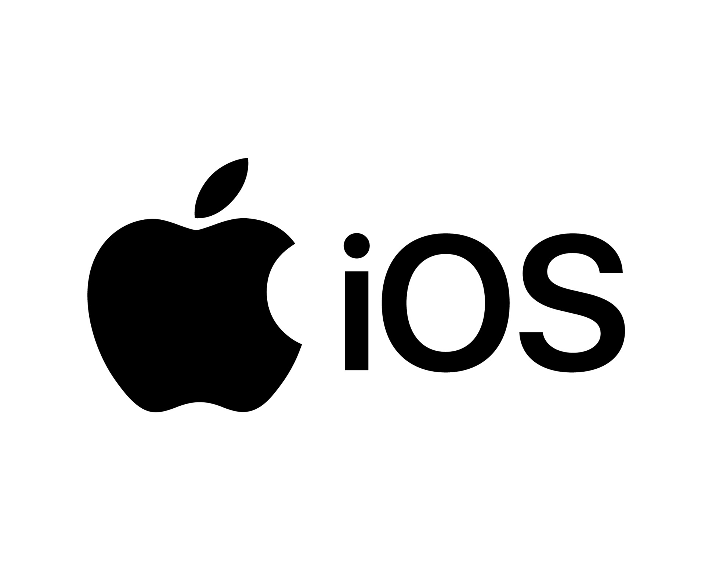

| Logo | Nazwa | Opis |
|---|---|---|
|  | iOS |
Apple iOS to zamkniętoźródłowy (closed-source) system operacyjny zaprojektowany na bazie systemu macOS wyłącznie dla telefonów iPhone oraz tabletów iPad (do momentu powstania iPad OS). System ten jest znany m.in. ze swojej prostoty użytkowania oraz poziomu zabezpieczeń. |
Android |
Android to otwartoźródłowy (open-source) system operacyjny zaprojektowany na bazie systemu linux. Początkowo miał być stosowany jedynie w aparatach cyfrowych, lecz znalazł swoje miejsce w smartfonach. Android działa na telefonach wielu marek oraz jest otwarty na modyfikacje. Jest często wybierany ze względu na możliwości personalizacji i dostępność na każdym pułapie cenowym. |